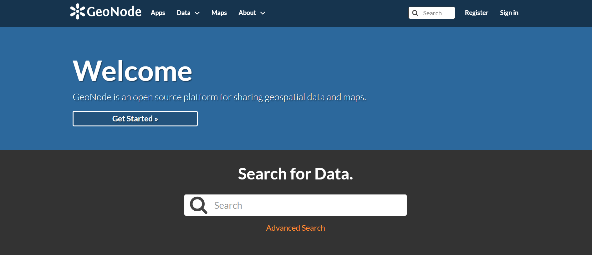
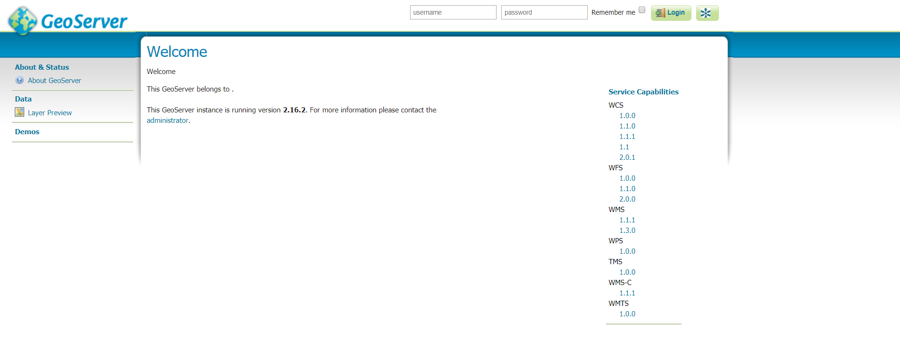

Cartoview ¶
Introduction ¶
This document describes the installation of Cartoview with GeoNode 2.10.3 on Ubuntu 18.04
Installation Requirements ¶
-
Install Python2.7 and Django.
1 2
sudo apt-get update sudo apt-get install python-pip python-django
Note
This will install the latest compatible with Python2.7 version of django which is 1.11.11 for now.
-
Install the following required packages.
1 2
sudo apt-get update sudo apt-get install python-virtualenv python-dev python-gdal libxml2 libxml2-dev libxslt1-dev zlib1g-dev libjpeg-dev libpq-dev libgdal-dev git default-jdk
Verify that the important packages are installed successfully. (The versions should be something like what after #)
1 2 3 4 5
python --version #Python 2.7.17 django-admin --version #1.11.11 virtualenv --version #15.1.0 update-java-alternatives –l #java-1.11.0-openjdk-amd64 1111 /usr/lib/jvm/java-1.11.0-openjdk-amd64 python -c "from osgeo import gdal; print gdal.__version__" #2.2.3
Database Installation ¶
-
Install PostgreSQL Database
1 2
sudo apt-get update sudo apt-get install postgresql postgresql-contrib
-
Install PostGIS
Extension to support Geographic objects that allows location queries to be run in SQL.
1
sudo apt-get install postgis
Note
You can install pgAdmin ( PostgreSQL GUI tool using ): sudo apt-get install pgadmin4
Note
For more Information about PostgreSQL visit postgresql.
Database Configuration ¶
-
Configure PostgreSQL interactive terminal to create the databases
You will need to log in with a user called postgres created by the installation to manage the database.
1
sudo -i -u postgres
Change the postgres user password
1
psql
This will open PostgreSQL interactive terminal and you can set the postgres user password by typing
1
\password
Exit the PostgreSQL prompt by typing
1
\q
-
Create two new databases
cartoviewandcartoview_datastore1 2
createdb cartoview createdb cartoview_datastore
Note
You can change the databases' name but make sure to change thier names in the local_settings.py file in Cartoview directory.
-
Add PostGIS extension to the created databases to deal with the geographic objects.
For
cartoviewdatabase: (Copy the command before the hash symbol)1 2
psql cartoview # Executed at ubuntu terminal CREATE EXTENSION postgis; # Executed at psql terminal
Exit the PostgreSQL terminal with
\qFor
cartoview_datastoredatabase: (Copy the command before the hash symbol)1 2
psql cartoview_datastore # Executed at ubuntu terminal CREATE EXTENSION postgis; # Executed at psql terminal
Notes
The previous step must be done for the two databases,
cartoview and cartoview_datastore.You can logout back to your user (other than postgres) by just typing
exit.
GeoNode 2.10.3 Installation ¶
Follow these setps if you don't have GeoNode 2.10.3 installed on your Ubuntu machine.
-
Create a Python Virtual Environment
Let's make a directory called
cartoview_service(You can name it whatever you prefer) that will contain two folders, python virtual environment and cartoview.1 2
mkdir cartoview_service cd cartoview_service
Create and activate the python virtual environment, we will name it
cartoview_venv.Note
You can name it whatever you prefer, but bare in mind to change every
cartoview_venvin the commands below with the name you set for your virtual environment.1 2
virtualenv cartoview_venv source cartoview_venv/bin/activate
Note
You would notice how your prompt is now prefixed with the name of the virtual environment,
cartoview_venvin our case.Make sure you have installed
python-pipandpython-gdalas we have done above. We will use them to install and run GeoNode and Cartoview.From now on, each command associated with geonode or cartoview must be executed while the virtual environment is activated.
-
Install geonode 2.10.3
1
pip install geonode==2.10.3
Cartoview Libraries Installation ¶
Warning
Make sure you're inside cartoview_service directory and the cartoview_venv is still activated.
-
Download and install Cartoview
Download the latest version of cartoview by cloning the repository.
1
git clone https://github.com/cartologic/cartoview.git
This will create a directory called
cartoviewinsidecartoview_servicedirectory.Now we need to install cartoview dependencies, but first go to
cartoviewdirectory.1 2
cd cartoview pip install -e .
Warning
Make sure you got the dot
.when you copy the previous command. -
Add the created databases to your
settings.pyfile.Go to
cartoviewdirectory, you will find inside it another folder calledcartoview. Navigate inside it also.You should find a file called
local_settings.py.sample. Remove the last wordsample.1
cp local_settings.py.sample local_settings.py
This will override the
settings.pyfile with a configured another settings file which islocal_settings.py.If you print the contents of
local_settings.pywith the below command.1
cat local_settings.py
You can see the databases that we have created above inside
local_settings.pyas below.1 2 3 4 5 6 7 8 9 10 11 12 13 14 15 16 17 18 19
DATABASES = { 'default': { 'ENGINE': 'django.contrib.gis.db.backends.postgis', 'NAME': 'cartoview', 'USER': 'postgres', 'PASSWORD': 'cartoview', 'HOST': 'localhost', 'PORT': '5432', }, # vector datastore for uploads 'datastore': { 'ENGINE': 'django.contrib.gis.db.backends.postgis’, 'NAME': 'cartoview_datastore', 'USER': 'postgres', 'PASSWORD': 'cartoview', 'HOST': 'localhost', 'PORT': '5432', } }Note
If you want to override any variable settings (for example to change the database password ,name or hostname), you can do this inside
local_settings.pyto override the pre-configured settings insettings.py. -
Create a symbolic link of OSGeo in your virtualenv needed by GDAL to run properly.
1
ln -s /usr/lib/python2.7/dist-packages/osgeo cartoview_venv/lib/python2.7/site-packages/osgeo
Note
The point of creating a symbolic link is to share the development source code of GDAL (which is installed previously at
Installation Requirementssection) instead of copying it every time we need to use it inside a python virtual environment. -
Install Cartoview Project Template
We will call it
cartoview_project(Pick the name, you wish of course.)Note
You can install it at any directory, we will install it outside the
cartoview_servicedirectory.Make sure the virtual environment is still activated (If you see its name prefixed your prompt, you're good to go).
1
django-admin.py startproject --template=https://github.com/cartologic/Cartoview-project-template/archive/master.zip --name django.env,uwsgi.ini,.bowerrc,server.py cartoview_project
This will generate a folder called
cartoview_project(or the name you have specified).Cartoview project template will take care of the initial setup of your project. It will generate all the code that is needed to establish a Django project which is based on Cartoview and GeoNode Frameworks.
-
Migrate & Load default data
Navigate to
cartoview_projectand inside it, run the below commands.Detect changes in the
app_manager1
python manage.py makemigrations app_manager
Create account Table:
1
python manage.py migrate account
Create the rest of the tables:
1
python manage.py migrate
Load default User:
1
python manage.py loaddata sample_admin.json
Load default oauth apps so that you will be able to authenticate with defined external server:
1
python manage.py loaddata default_oauth_apps.json
Load default Initial Data for Cartoivew:
1
python manage.py loaddata initial_data.json
-
Test Development Server by running this Command
1
python manage.py runserver 0.0.0.0:8000
At
localhost:8000, you should get:
Sign-in with:
1 2
user: admin password: admin
-
Install Apps From GeoApp Market:
Load default Cartoview App Stores data:
1
python manage.py loaddata app_stores.json
Install nodejs and then install bower we need them to install app_manager dependencies
Go to your project folder (in our case, cartoview_project) and do:
1
bower install
Collect static files.
1
python manage.py collectstatic --no-input
Now you can install Apps from GeoApp Market Go to Apps tab, click Manage Apps button, and install the app you want.
GeoServer 2.16.2 Installation ¶
-
Install and configure Tomcat 9
Warning
Make sure you have installed
default-jdkas we have done before.We will create a new group and a user that will run and control the tomcat service.
1 2
sudo groupadd tomcat sudo useradd -s /bin/false -g tomcat -d /opt/tomcat tomcat
Note
We made this user a member of the tomcat group, with a home directory of /opt/tomcat (where we will install Tomcat), and with a shell of /bin/false (so nobody can log into the account).
Now we will download Tomcat 9, Navigate to
/tmpdirectory (we will download Tomcat there, you can download it anywhere else).1 2
cd /tmp curl -O https://downloads.apache.org/tomcat/tomcat-9/v9.0.33/bin/apache-tomcat-9.0.33.tar.gz
Tomcat used to be installed in the directory
/opt/tomcat. So we will extract and install it there too.1 2
sudo mkdir /opt/tomcat sudo tar xzvf apache-tomcat-9.0.33.tar.gz -C /opt/tomcat --strip-components=1
Now we should set up the tomcat user that we have created before to have the permissions of the directory
/opt/tomcat.1 2 3 4 5
cd /opt/tomcat sudo chgrp -R tomcat /opt/tomcat sudo chmod -R g+r conf sudo chmod g+x conf sudo chown -R tomcat webapps/ work/ temp/ logs/
Info
Basically, what we have done in the previous step:
- Give the tomcat group the ownership over the entire installation directory.
- Give the tomcat group read access to the conf directory and all of its contents, and execute access to the directory itself.
- Make the tomcat user to be the owner of the webapps, work, temp, and logs directories.
Let’s create a system service to manage tomcat startup.
1
sudo nano /etc/systemd/system/tomcat.service
Copy the text below inside this file.
1 2 3 4 5 6 7 8 9 10 11 12 13 14 15 16 17 18 19 20 21 22 23 24 25
[Unit] Description=Apache Tomcat Web Application Container After=network.target [Service] Type=forking Environment=JAVA_HOME=/usr/lib/jvm/java-1.11.0-openjdk-amd64 Environment=CATALINA_PID=/opt/tomcat/temp/tomcat.pid Environment=CATALINA_HOME=/opt/tomcat Environment=CATALINA_BASE=/opt/tomcat Environment='CATALINA_OPTS=-Xms512M -Xmx1024M -server -XX:+UseParallelGC' Environment='JAVA_OPTS=-Djava.awt.headless=true -Djava.security.egd=file:/dev/./urandom' ExecStart=/opt/tomcat/bin/startup.sh ExecStop=/opt/tomcat/bin/shutdown.sh User=tomcat Group=tomcat UMask=0007 RestartSec=10 Restart=always [Install] WantedBy=multi-user.target
Warning
For line 8 above, make sure you have added the correct path for you installed version of Java.
To test the service:
1 2 3
sudo systemctl daemon-reload sudo systemctl start tomcat sudo systemctl status tomcat
To make the service enabled by default:
1
sudo systemctl enable tomcat
Configure Tomcat Web Management Interface
In order to use the manager web app that comes with Tomcat, we need to add a login to our Tomcat server. We will do this by editing
tomcat-users.xmlfile.1
sudo nano /opt/tomcat/conf/tomcat-users.xml
Add the following line to be between
tomcat-userstags. You can set the username and password that you prefer. For us, username will beadminand password to becartoview.1
<user username="admin" password="cartoview" roles="manager-gui,admin-gui"/>
By default, newer versions of Tomcat restrict access to the Manager and Host Manager apps to connections coming from the server itself. You might want to alter this behaviour.
For Manager app type:
1
sudo nano /opt/tomcat/webapps/manager/META-INF/context.xml
For Host Manager app type:
1
sudo nano /opt/tomcat/webapps/host-manager/META-INF/context.xml
Inside both, comment out the IP address restriction to allow connections from anywhere.
Instead of this:
<Valve className="org.apache.catalina.valves.RemoteAddrValve" allow="127\.\d+\.\d+\.\d+|::1|0:0:0:0:0:0:0:1" />To be this:
<!--<Valve className="org.apache.catalina.valves.RemoteAddrValve" allow="127\.\d+\.\d+\.\d+|::1|0:0:0:0:0:0:0:1" />-->Restart Tomcat service:
1
sudo systemctl restart tomcat
In the browser if you navigate to
localhost:8080, you should see Tomcat up and running and you can access theManager Appby logging in with the credentials you have entered insidetomcat-users.xml -
Download and install GeoServer war file
Now we will download the latest stable version of GeoServer war file from here or you can execute the following command.
1 2
cd /tmp wget --no-check-certificate https://build.geo-solutions.it/geonode/geoserver/latest/geoserver-2.16.2.war
Note
We have downloaded the war file inside
/tmpdirectory, but you can download it anywhere else.Rename the file to be
geoserver.warinstead ofgeoserver-2.16.2.war.1
mv geoserver-2.16.2.war geoserver.war
Copy the geoserver.war file to
/tomcat/webappsdirectory.1
sudo cp geoserver.war /opt/tomcat/webapps/
Restart Tomcat so that it will be able to manage GeoServer as a web app.
1
sudo systemctl restart tomcat.service
This will cause Tomcat to serve GeoServer from the war file which we have put inside
tomcat/webapps.Info
Make sure that GeoServer is running:
- Navigate to
localhost:8080to open Tomcat then click onManager App. - Login with the credentials, you have entered in
tomcat-users.xml. - You should find GeoServer under Applications section started already.
Now GeoServer is up and running at
localhost:8080/geoserver.
To sign-in, make sure you're signed in Cartoview and click on GeoNode icon beside the
Loginbutton. - Navigate to
We need to install Tomcat to be able to run GeoServer inside it as a Java application.
Important
Cartview must be up and running
Deployment Notes ¶
Important
In Production Configure GeoServer before uploading layers from hereImportant
Once Cartoview is installed it is expected to install all apps from the App Store automatically At the moment Cartoview will fully support Apache server only For nginx deployments, Cartoview will be able to detect new apps and get the updates, however to apply the updates, web server restart will be required to complete the process Cartoview will not be able to restart nginx when new apps are installed. After you install or update apps from the app manager page you will need to restart nginx manually until this issue is addressed in the future
Follow these steps to get apps working on nginx:
- Collect static files using this commands
python manage.py collectstatic --noinput - Restart server now you should restart server after installing any app